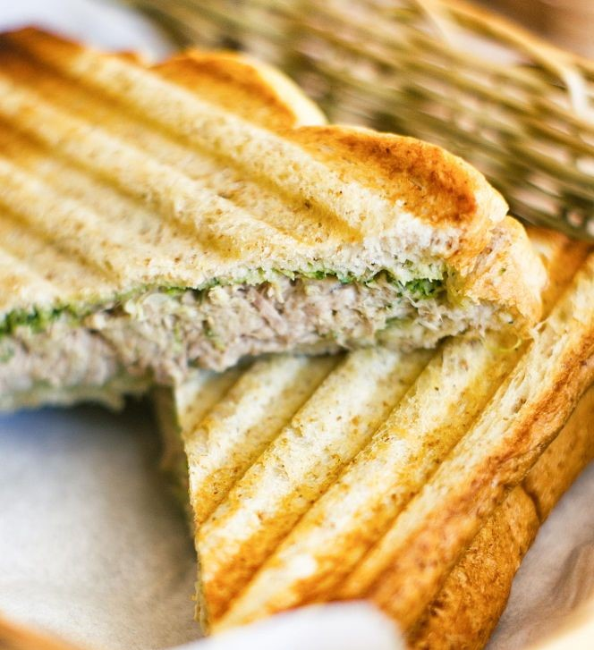

Return To Homepage
Tuna Sandwich Recipe

Description
This is one of my favourite light snacks because of how light yet delicious it is. It's super quick to prepare, too,
so it's easy to prepare anytime.
Ingredients
- A pair of toast slices.
- One can of tuna.
- Black pepper.
- One small lemon.
Steps
- Heat up the two slices of toast. I avoid toasting it on the stove with butter because I like my Sandwich
to be light.
- Evenly spread the can of tuna on one slice.
- Add black pepper to your liking. I love spicy food so I add a few pinches.
- Squeeze the lemon on your tuna to your liking as well. The lemons we have are quite small so I squeeze
an entire lemon on my sandwich.
- voila! Now you have a quick but easy sandwich to munch on. Enjoy!